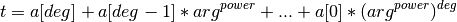

RunTimePredictor¶
- class astropy.utils.timer.RunTimePredictor(func, *args, **kwargs)[source] [edit on github]¶
Bases: object
Class to predict run time.
Note
Only predict for single varying numeric input parameter.
Parameters: func : function
Function to time.
args : tuple
Fixed positional argument(s) for the function.
kwargs : dict
Fixed keyword argument(s) for the function.
Examples
>>> from astropy.utils.timer import RunTimePredictor
Set up a predictor for 10**X:
>>> p = RunTimePredictor(pow, 10)
Give it baseline data to use for prediction and get the function output values:
>>> p.time_func(range(10, 1000, 200)) >>> for input, result in sorted(p.results.items()): ... print("pow(10, {0})\n{1}".format(input, result)) pow(10, 10) 10000000000 pow(10, 210) 10000000000... pow(10, 410) 10000000000... pow(10, 610) 10000000000... pow(10, 810) 10000000000...
Fit a straight line assuming arg**1 relationship (coefficients are returned):
>>> p.do_fit() array([ 1.00135803e-08, 1.16777420e-05])
Predict run time for 10**5000:
>>> p.predict_time(5000) 6.174564361572262e-05
Plot the prediction:
>>> p.plot(xlabeltext='Power of 10')

When the changing argument is not the last, e.g., pow(x, 2), something like this might work:
>>> p = RunTimePredictor(lambda x: pow(x, 2)) >>> p.time_func([2,3,5]) >>> sorted(p.results.items()) [(2, 4), (3, 9), (5, 25)]
Attributes Summary
results Function outputs from time_func. Methods Summary
do_fit([power, deg, min_datapoints]) Fit a function to the lists of arguments and their respective run time in the cache. plot([xscale, yscale, xlabeltext, save_as]) Plot prediction. predict_time(arg) Predict run time for given argument. time_func(arglist) Time the partial function for a list of single args and store run time in a cache. Attributes Documentation
- results[source]¶
Function outputs from time_func.
A dictionary mapping input arguments (fixed arguments are not included) to their respective output values.
Methods Documentation
- do_fit(power=1, deg=1, min_datapoints=3)[source] [edit on github]¶
Fit a function to the lists of arguments and their respective run time in the cache.

Parameters: power : int, optional
Power of values to fit.
deg : int, optional
Degree of polynomial to fit.
min_datapoints : int, optional
Minimum number of data points required for fitting. They can be built up with time_func.
Returns: a : array_like
Fitted coefficients from numpy.polyfit.
- plot(xscale=u'linear', yscale=u'linear', xlabeltext=u'args', save_as=u'')[source] [edit on github]¶
Plot prediction.
Note
Uses matplotlib.
Parameters: xscale, yscale : {‘linear’, ‘log’, ‘symlog’}
Scaling for matplotlib.axes.Axes.
xlabeltext : str, optional
Text for X-label.
save_as : str, optional
Save plot as given filename.
- predict_time(arg)[source] [edit on github]¶
Predict run time for given argument. If prediction is already cached, cached value is returned.
Parameters: arg : number
Input argument to predict run time for.
Returns: t_est : float
Estimated run time for given argument.
- time_func(arglist)[source] [edit on github]¶
Time the partial function for a list of single args and store run time in a cache. This forms a baseline for the prediction.
This also stores function outputs in results.
Parameters: arglist : list of numbers
List of input arguments to time.